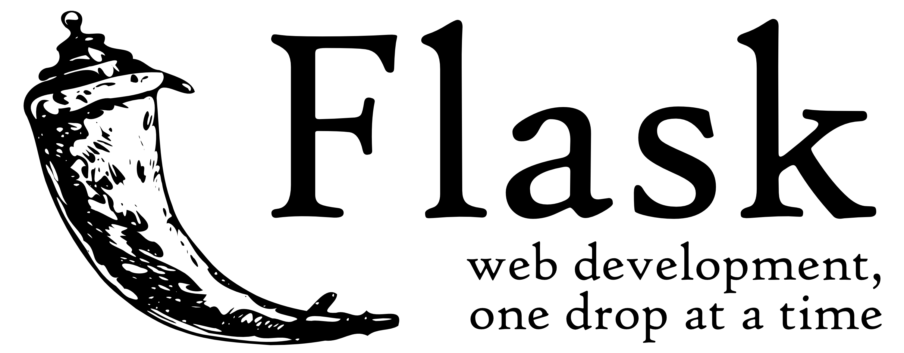

Présentation disponible à : http://piji.ca/python/
Présenté par Jean-Philippe Caissy / @jpcaissy
Qui suis-je ?
Développeur Python
Étudiant au bac
Vice-Président de Montréal-Python
Organisateur de PyCon
Qu'est-ce que Python?
- Langage interprété comme Node, Ruby, PHP, etc
- C'est une norme, plusieurs implémentations (CPython, Jython, IronPython, PyPy)
- Orienté objet
- Mature : plus de 20 d'âge
- Multiplateforme
- Garbage Collector
- Console interactive!
- Batteries-included
- Utilisé par toute sorte d'industrie
Console
Python vient avec une console interactive.
Démonstration rapide!
Syntaxe
- Aucun curly-braces { ou }!
- L'indentation sert à délimiter les blocs de code, comme en CoffeeScript.
if taille > 50:
print "Plus grand que 50"
else:
while taille <= 50:
print taille
taille -= 1
Flot de contôle
- if/elif/else
- for
- while
-
Une déclaration se termine avec un deux-point :
if/elif/else
if condition1:
#faire quelquechose
elif condition2:
#faire autre chose
elif condition3:
#faire 3e chose
else:
#sinon ...
while
i = 0
while i < 10:
i += 1
print i #affiche 10
for
Il n'y pas de boucle for comme en C ou java avec déclaration d'entier et incrément (for i = 0; i < 10; ++i)
On utilise for pour naviguer dans des listes.
Avec la méthode range, on peut créer une liste de 0 à x éléments :
for i in range(10):
print i
#va afficher les chiffres de 1 à 9
for i in range(10, 20):
print i
#va afficher les chiffres de 10 à 19
range crée une liste (un tableau) d'éléments
>>> range(10)
[0, 1, 2, 3, 4, 5, 6, 7, 8, 9]
donc ... for itère sur des listes!
for i in [0, 1, 2, 3, 4]:
print i
#affiche les nombres de 0 à 4
Types de données
En Python, tout est objet.
Chaque type de donnée est en fait un objet.
- Bool: True/False
- Integer: 1, 2, 3, etc
Aucune limite sur les entiers. - Float (IEEE 754)
- Decimal: nombre flottants à valeurs fixes
- String : chaîne de caractère ASCII
- Unicode: chaîne de caractère unicode
- Liste/Tableau :
[1, True, "123"] - Dictionnaire :
{'cle 1': 123, 123: 'valeur 2'} - Tuples :
('A', 'B', 'C', 12)
String
Il est recommendé de toujours utiliser des unicodes au lieu de strings. Avec Python 3.x, les strings n'existent plus, tout est unicode.
Une chaîne de caractère est en fait un tableau de caractère.
chaine = "INF4375-20"
print chaine[2] #Affiche la lettre 'F'
print chaine[-1] #Affiche le chiffre '0'
print chaine.lower() #affiche "inf4375-20"
print "foobar".upper() #affiche "FOOBAR"
#pour déclarer un string unicode, on ajoute le u
chaine = u"chaîne de caractère en unicode"
String
La concaténation de chaîne peut se faire de plusieurs manière, mais le plus pythonesque est :
prenom = "Jean-Philippe"
print "Bonjour %s" % prenom
nom = "Caissy"
print "Re bonjour %s %s" % (prenom, nom)
#(prenom, nom) est un tuple d'éléments
List
ma_liste = [1, 'b', 'c']
if 'b' in ma_liste:
print "'b' se trouve dans ma_liste"
ma_liste.append('2')
print ma_liste #[1, 'b', 'c', '2']
ma_liste.pop()
print ma_liste #[1, 'b', 'c', '2']
print ma_liste[1] #Affiche 'b'
new_liste = ma_liste[0:3] #Retourne les éléments de l'index 0 à 2!
print new_liste #[1, 'b', 'c']
print ma_liste[2:] #Affiche les éléments de l'index 2 à la fin
print ma_liste[:2] #Affiche les éléments du début à l'index 1
Dictionnaires
cle = 567
mon_dict = {
'abc': True,
123: 'def',
cle: ['1', '2', '3']
}
print mon_dict['abc'] #retourne True
mon_dict[123] = 'fed'
del mon_dict['abc'] #supprime la clé 'abc'
Tuple
Un tuple est une liste immuable : une fois défini on ne peut pas rajouter ou supprimer d'éléments.
valeurs = ('patate', 'foobar', 123)
print valeurs[1] #affiche 'foobar'
valeurs[3] = 'abc' #Erreur
valeurs[2] = 'abc' #OK, car l'index 2 est définit
Méthodes
def ma_methode(param_1):
if param_1:
print u"param_1 est défini"
def autre_methode():
ma_methode(true)
ma_methode(param_1='Patate')
Une méthode peut avoir un nombre indéfini de paramètres
def faire_qqchose(param1, *args):
print param1, args
faire_qqchose('foobar', 'patate', 123)
#Affiche 'foobar' ['patate', 123]
args va contenir une liste de tous les paramètres supplémentaires que la méthode reçoit.
Une méthode peut avoir un nombre indéfini de paramètres nommés !
def faire_qqchose(param1, **kwargs):
print param1, kwargs
faire_qqchose('foobar', cours='INF4375', groupe='20')
#Affiche 'foobar' {'cours': 'INF4375', 'groupe'='20'}
kwargs va contenir un dictionnaire de tous les paramètres nommées passé à la méthode.
On peut mélanger les deux !
def faire_qqchose(param1, *args, **kwargs):
print param1, args, kwargs
faire_qqchose('foobar', 42, 'hello', cours='INF4375', groupe='20')
#Affiche 'foobar' [42, 'hellp'] {'cours': 'INF4375', 'groupe'='20'}
Les classes/objets
class Personne:
nom = "Jean-Philippe"
courriel = "jpcaissy@piji.ca"
def afficher_nom(self):
print "%s <%s>" % (nom, courriel)
Vous remarquerez qu'on passe l'instance de la classe comme premier paramètre (self).
La norme est d'utilisé self mais ça peut être n'importe quel nom de paramètre.
moi = Personne()
afficher_nom() #Affiche Jean-Philippe <jpcaissy@piji.ca>
moi.nom = "Jacques Berger"
moi.courriel = "berger.jacques@uqam.ca"
afficher_nom()
Héritage de classe
class Employe(Personne):
def afficher_employe(self):
print self.nom
emp = Employe()
emp.afficher_employe()
emp.afficher_nom()
Python supporte l'héritage multiple!
Méthodes magiques
class Employe(Personne):
def __init__(self, param1):
#Constructeur
def __str__(self):
#Cast vers un string
def __unicode__(self):
#Cast vers un unicode
def __eq__(self, other)
#surcharge opérateur égalité
def __lt__(self, other)
#surcharge opérateur plus petit que <
[...]
def __set__(self, instance, value)
#Assignation d'attribut de classe
def __get__(self, instance, owner)
#Récupérer un attribut d'une classe
Plusieurs objets ont des méthodes particulièrs.
Modules
En python, un module est un fichier contenant des attributs.
foobar.py
class ObjetFoobar():
pass
patate.py
class PatatesFrites():
pass
Autre fichier dans le même dossier
import patate
from foobar import ObjetFoobar
frites = patate.PatatesFrites()
foo = ObjetFoobar()
class PatatesFrites():
pass
Autre fichier dans le même dossier
import patate
from foobar import ObjetFoobar
frites = patate.PatatesFrites()
foo = ObjetFoobar()
Packaging
Même principe que npm install, mais plus puissant.
Packaging : un boite de pandore
pip, distutils, distutils2
Envrionnement virtuels
virtualenv : Sert à isoler chacun des projets.
Framework Web
Il existe une multitude de framework web en Python :
- Django
- Pyramid
- web2py
- CherryPy
- Flask
- Turbogears
- ...
Ces frameworks existent pour simplifier le développement d'applications web.
Pour cette présentation, je vais vous montrer Flask.
Flask

http://flask.pocoo.org/
Framework de développement web très léger, mais complet.
Créer un applicaation Flask est aussi simple que :
from flask import Flask
app = Flask("Presentation Python")
@app.route("/")
def hello():
return "Boujour classe"
if __name__ == "__main__":
app.run()
L'architecture de Flask est très souple et permet de rajouter et remplacer au besoin les différents composants :
- Débuggeur intégré
- Générateur d'interface d'administration
- Gestion de session
- ORM
- Gestion de session
- Engin de templating
- etc
Routing
Les routes sont géré pas le décorateur @route du module app qui est ajouté à une méthode.
@app.route("/"):
def index():
return "Page d'accueil"
@app.route("/hello"):
def hello():
return "Bonjour inconnu"
@app.route("/hello/<name>")
def hello(name):
return "Bonjour %s" % name
Méthodes
Il est possible de préciser les méthodes à laquelle une route répond
@app.route("/login", methods=['GET', 'POST]):
def login(name):
if request.method == "POST":
faire_la_connexion()
else:
afficher_formulaire_connexion()
Méthodes reconnues : GET, HEAD, POST, PUT, DELETE, OPTIONS
Template
Par défaut Flask utilise l'engin de templating Jinja2. Il est possible d'en utiliser un autre, mais je l'aime particulièrement.
À la différence de Jade, on écrit du HTML, mais on rajoute des bouts de codes propre au langage du template.
Voici un exmple de template Jinja2
bonjour.html:
<!doctype html>
Bonjour de flask
{% if name %}
Bonjour {{ name }} !
{% else %}
Bonjour inconnu !
{% endif %}
from flask import render_template
@app.route("/hello/"):
@app.route("/hello/<name>")
def hello(name=None):
return render_template("bonjour.html", name=name)
Base de donnée
Une application sans base de donnée, ça ne sert pas à grand chose!
Plusieurs ORM (Object Relation Manager):
- SQLAlchemy : Mysql, Postgesql, Sqlite, MongoDB
- MongoEngine : MongoDB
- Peewee: Mysql, Postgresql, Sqlite
Mon coup de coeur est MongoEngine, mais SQLAlchemy est le plus populaire.
MongoEngine
Comme le nom le dit, MongoEngine est un ORM pour MongoDB. L'intégration dans Flask est très facile :
from flask import Flask
from flask.ext.mongoengine import MongoEngine
app = Flask("Presentation Python")
app.config['MONGODB_SETTINGS'] = {'DB': 'presentation_python'}
db = MongoEngine(app)
@app.route("/")
def hello():
return "Boujour classe"
if __name__ == "__main__":
app.run()
Bien-sûr, un ORM n'est pas utile si on ne déclare pas nos modèles.
Modèle MongoEngine
Modélisons un blog!
from mongoengine import (
Document, EmbeddedDocument, EmbeddedDocumentField,
StringField, ListField, EmailField)
class Author(EmbeddedDocument):
name = StringField(required=True, max_length=160)
email = EmailField()
class Comment(EmbeddedDocument):
name = StringField(max_length=60)
comment = StringField(required=True)
class Blog(Document):
titre = StringField(required=True, max_length=60)
tags = ListField(StringField(max_length=30))
auteur = EmbeddedDocumentField(Author)
comments = ListField(EmbeddedDocumentField(Comment))
Section d'administration
Une fois notre modèle créé, nous pouvons très rapidement commencer à gérer les documents!
Plusieurs interfaces d'administrations existent pour Flask. Essayons Flask-SuperAdmin.
Flask-SuperAdmin
Site officielIntégrer Flask-SuperAdmin est très simple.
from flask import Flask
from flask.ext.mongoengine import MongoEngine
from flask.ext.superadmin import Admin
from mongoengine import (
Document, EmbeddedDocument, EmbeddedDocumentField,
StringField, ListField, EmailField)
class Author(EmbeddedDocument):
name = StringField(required=True, max_length=160)
email = EmailField()
class Comment(EmbeddedDocument):
name = StringField(max_length=60)
comment = StringField(required=True)
class Blog(Document):
titre = StringField(required=True, max_length=60)
tags = ListField(StringField(max_length=30))
auteur = EmbeddedDocumentField(Author)
comments = ListField(EmbeddedDocumentField(Comment))
app = Flask("Presentation Python")
app.config['MONGODB_SETTINGS'] = {'DB': 'presentation_python'}
app.config['SECRET_KEY'] = "12345"
db = MongoEngine(app)
admin = Admin(app)
admin.register(Blog)
if __name__ == "__main__":
app.run()
Voyons de quoi cela à de l'air !
Bien-sûr, il manquerait un formulaire de connexion pour s'authentifier.
Service REST
Avec une interface d'administration, il ne nous manque qu'un service REST !
from flask import Flask
from flask.ext.mongoengine import MongoEngine
from flask.ext.superadmin import Admin
from flask.ext.mongorest import MongoRest
from flask.ext.mongorest.views import ResourceView
from flask.ext.mongorest.resources import Resource
from flask.ext.mongorest import operators as ops
from flask.ext.mongorest import methods
from mongoengine import (
Document, EmbeddedDocument, EmbeddedDocumentField,
StringField, ListField, EmailField)
class Author(EmbeddedDocument):
name = StringField(required=True, max_length=160)
email = EmailField()
class Comment(EmbeddedDocument):
name = StringField(max_length=60)
comment = StringField(required=True)
class Blog(Document):
titre = StringField(required=True, max_length=60)
tags = ListField(StringField(max_length=30))
auteur = EmbeddedDocumentField(Author)
comments = ListField(EmbeddedDocumentField(Comment))
class BlogResource(Resource):
document = Blog
app = Flask("Presentation Python")
app.config['MONGODB_SETTINGS'] = {'DB': 'presentation_python'}
app.config['SECRET_KEY'] = "12345"
db = MongoEngine(app)
admin = Admin(app)
admin.register(Blog)
@api.register(name='blogs', url='/blog/')
class BlogView(ResourceView):
resource = PostResource
methods = [methods.Create, methods.Update, methods.Fetch, methods.List]
if __name__ == "__main__":
app.run()